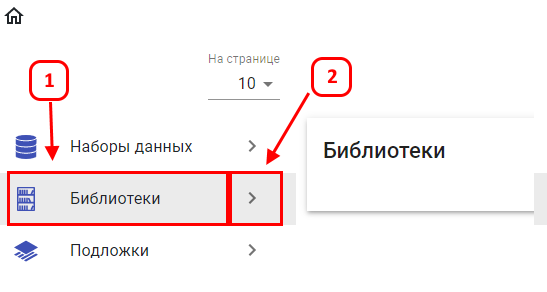
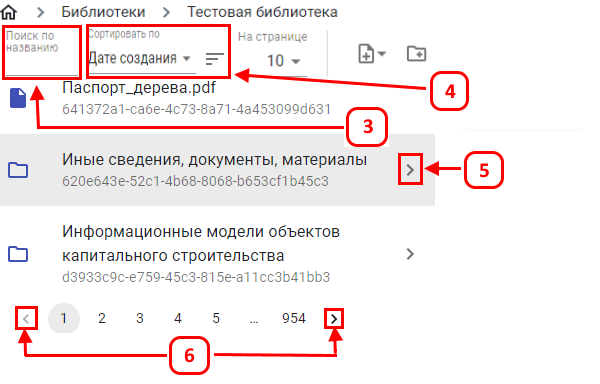
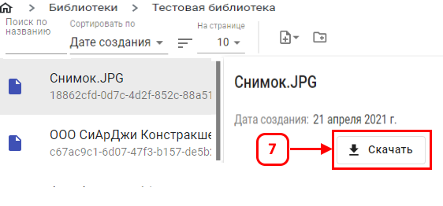

Для перехода в раздел управления «Библиотеки», требуется в появившимся окне выбрать «Библиотеки» (1) и нажать «Кнопку перехода в раздел» (2):

В разделе «Библиотеки» представлен список всех разделов и файлов.
Для удобства поиска и сортировки можно воспользоваться инструментами «Фильтр по названию» (3) и «Сортировка» (4).
Для того, чтобы перейти в требуемый раздел библиотеки, нужно нажать на (5). Перелистывание можно осуществлять с помощью стрелок вправо и влево (6).

Для скачивания документа необходимо выбрать файл и в правом углу нажать кнопку «Скачать»(7) и после этого начнется загрузка.
